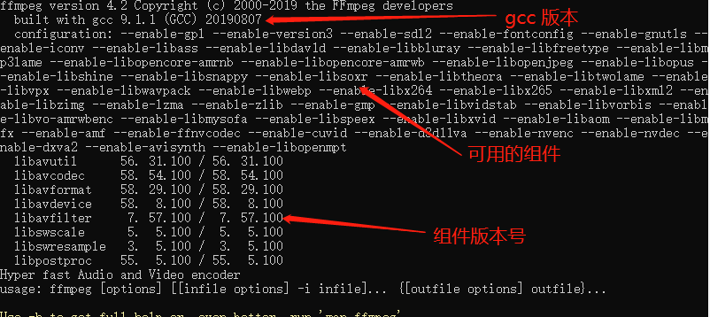
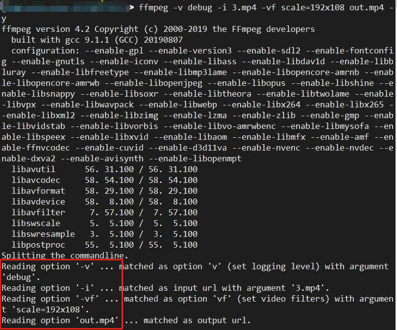
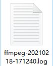
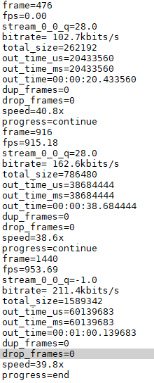

ffmpeg默认就会输出一些日志，包含编译的工具（gcc版本）、可用的组件（–enable-xxxx）、组件版本号码，如下图

这些信息是默认输出的，每次执行合作都会打印在控制台中，如果不想看这些信息，ffmpeg提供了-hide_banner选项，添加该选项后，即不会打印这些信息
而在执行日志层面，ffmpeg日志与通用日志一致，也有级别的概念，可以使用-v选项来控制，设置级别时，可以使用英文单词，也可以使用数字，具体的级别如下
debug 48
即debug级别的日志，在ffmpeg中使用48来标记，该级别会打印全部的日志，执行一个命令试试ffmpeg -v debug -i 3.mp4 -vf scale=192x108 out.mp4 -y
该命令等效于ffmpeg -v 48 -i 3.mp4 -vf scale=192x108 out.mp4 -y
执行命令后，控制台输出日志如下

上面的命令，将视频压缩成190x108分辨率的视频，使用了-vf选项，可以看到红框中的信息，将命令执行时的步骤很详细的打印了出来。
verbose 40
比debug日志简略一些，上面的命令同样再执行一次，上图红框中的信息就不再打印了
info 32
与verbose相似，显示的日志会稍微少些，这也是ffmpeg默认使用的日志级别
warning 24
只显示warning或更严重的日志
error 16
只显示错误或更严重的日志
fatal 8
只显示致命错误，一般出现这些错误，程序会退出
panic 0
只显示程序崩溃的日志，这种一般是ffmpeg内部的错误了，一般二般情况下应该都不会遇到的
quiet -8
什么也不显示，包括错误信息，生产环境通常并不会这么做，除非你疯了🤣
以上是控制日志打印级别，有时需要将日志保存下来，以备出现问题时定位问题，这时可以使用- report命令，将日志保存到文件中，执行命令ffmpeg -report -i 3.mp4 -vf scale=192x108 out.mp4 -y，执行后文件夹中出现了一个日志文件

打开文件后，发现输出的日志与verbose级别一致。
但是这种方式文件名是ffmpeg根据时间默认生成的，如果要指定文件名可以吗？答案当然是肯定的，执行命令FFREPORT=file=ffreport.log:level=32 ffmpeg -i 3.mp4 -vf scale=192x108 out.mp4 -y
成功执行后，会发现文件夹下多了一个名为ffreport.log的文件，即指定生成的日志文件
监控处理进度
有时可能会想知道当前处理的进度，这时可以使用-progress选项，执行命令如下ffmpeg -progress pro.log -i big_buck_bunny.mp4 -vf scale=192x108 out.mp4 -y
成功执行后，会有一个pro.log文件，打开后如下

有了这些信息，就可以了解当前处理的进度，可以做一些人性化的功能。